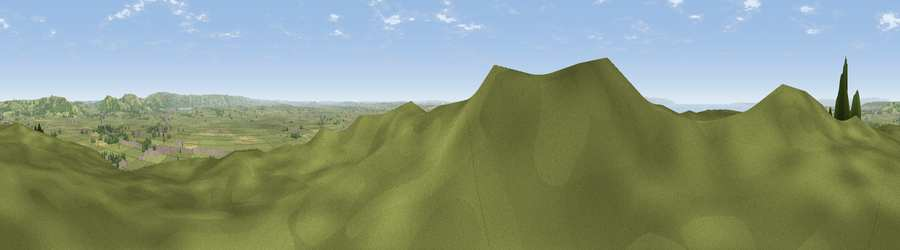

Brent Knoll
#1612 in England · top 5% of its area beats it · near Brent KnollWhere it is
The exact computed spot (ST 34103 50929). Click the marker for map links.
The view, rendered

A 360° render of this exact spot computed from the terrain model, tree cover and land cover — summer colours, afternoon light, calibrated against photographs of famous viewpoints. Real trees, hedges and buildings will differ in detail.
The panorama
Grey silhouette: terrain skyline in each direction (720 bearings, Earth curvature and refraction included). Dashed green: skyline with trees (+15 m) and buildings (+8 m) as obstacles. Blue strip: how far the ground is visible on each bearing.
Where the view opens
Wedge length = distance to the farthest visible ground on that bearing (vegetation-aware). Rings at 10, 25 and 50 km.
What fills the view
74% grassland · 12% woodland · 7% built-up · 4% cropland · 3% water
Angular shares of the visible panorama (visual magnitude), not map area. Landscape diversity 0.40 (0–1 Shannon).
Key numbers
More beautiful places nearby
The staircase of upgrades: each row has a higher view potential than everything closer. Driving times are estimates from straight-line distance, calibrated against real road routing — check an actual route before setting out.
| Place | Direction | Drive | Score |
|---|---|---|---|
| Bleadon Hill [Loxton Hill] | NNE · 7 km | ~14 min | 79.6 |
| Viewpoint near Holford | WSW · 21 km | ~36 min | 80.8 |
| Viewpoint near Holford | WSW · 22 km | ~36 min | 82.2 |
| Viewpoint near Holford | WSW · 22 km | ~37 min | 85.9 |
| Viewpoint near West Quantoxhead | WSW · 23 km | ~38 min | 87.9 |
| Viewpoint near West Quantoxhead | WSW · 24 km | ~39 min | 88.7 |
| The Knoll | SSE · 66 km | ~89 min | 91.0 |
51.25370, -2.94564 · source: osm peak · position refined by local search. Computed location — check access rights before visiting.